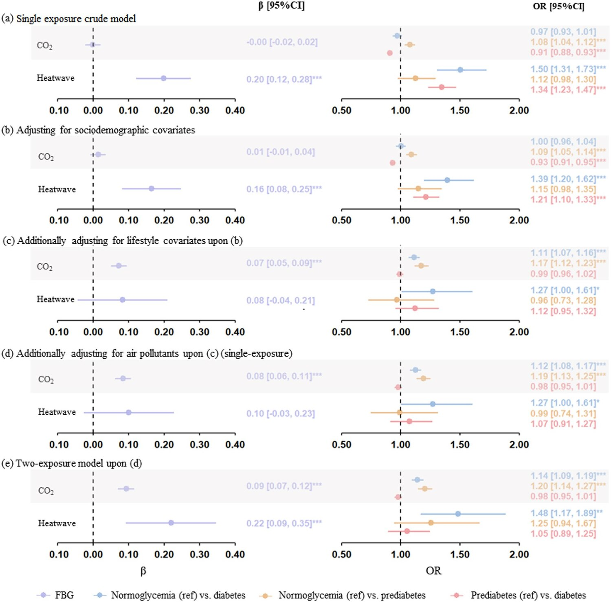

Climate change, closely linked to the increasing CO₂ concentrations and heatwave events, may directly and indirectly affect the risk for diabetes, which has been a leading cause of disability worldwide. Using the baseline survey of a large multi-center cohort including 134,403 participants in China, this study for the first time examined the associations of CO₂ and heatwaves with the risks for diabetes/prediabetes at an individual level. The exposure to CO₂ and heatwaves was estimated at spatial resolutions of 10 km and 27 km, respectively. Multilevel logistic regression models with random intercepts at the community level were used to estimate the associations after adjusting for individual-level covariates. Subgroup and sensitivity analyses investigated the variations and robustness of the association, respectively, while mediation analysis estimated the mediation effect of body mass index (BMI) on the association. Elevated fasting blood glucose levels were associated with higher CO₂ concentrations (β=0.09 [95% CI: 0.07, 0.12]) and increased heatwave frequency (β=0.22 [95% CI: 0.09, 0.35]), both of which were also associated with the increased risks for diabetes (CO₂: OR=1.14 [1.09, 1.19]; heatwaves: OR=1.48 [1.17, 1.89]). The association between CO₂ and diabetes was stronger among individuals with less than a high school education, those residing in rural areas, and those living in non-compact built environment. The association between heatwaves and diabetes was stronger among individuals consuming ≥400 g/day of fruit and vegetable. Among those who experienced heatwaves, BMI mediated about 8.2% and 2.9% of the associations between CO₂ and diabetes and prediabetes, respectively; among those who did not experience heatwaves, BMI mediated about 11.5% of the association between CO₂ and prediabetes. Higher CO₂ concentrations and increased heatwave frequency were associated with a higher risk of diabetes in China, with BMI partially mediating CO₂-diabetes association among individuals who experienced heatwave events. This study would advance our understanding of the health effects of climate change and provide scientific evidence for climate change mitigation.

Figure 1. Associations of CO₂ and heatwaves with the risks for diabetes/prediabetes. a Single-exposure crude models; (b) single-exposure models adjusting for age, sex, ethnicity, marital status, educational level, occupation, and urbanicity; © single-exposure models additionally adjusting for alcohol drinking, smoking, sleep duration, sedentary time, physical activity, and diet upon (b); (d) single-exposure models additionally adjusting for PM2.5, O₃, CO, NO₂, and SO₂ upon ©; (e) two-exposure models adjusting for all covariates in (d). CI, confidence interval; FBG, fasting blood glucose; OR, odds ratio. *p<0.05, **p<0.01, ***p<0.001.